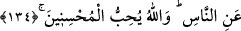

“koşun.”
Burada “arz” kelimesinin zikredilmesi bu kelimenin yapısında temsîlî olarak
genişliğe daha fazla delâlet etme özelliği bulunduğu içindir. Çünkü bir şeyin arz, yani
eni, normalde uzunluğundan daha az olur.
Cennetin korunanlar (takvâ ehli) için hazırlanmış olması cennetin şu anda yaratılmış
olduğuna ve bu âlemin dışında bulunduğuna delâlet eder.
Yaratılmış olduğunu fiilin mâzî (di-li geçmiş zaman) sîgası ile kullanılmış olmasından
çıkarıyoruz. Bu âlemin dışında olduğunu ise, eni, bütün bu âlem kadar olan bir şeyin bu
âlemin içinde olamayacağından çıkarıyoruz.
Rivâyet edilir ki Herakliyus’un elçisi, Hz. Peygamber’e; “Siz, eni gökler ve yer kadar
olan bir cennete dâvet ediyorsunuz. Peki cehennem nerede, öyleyse?” diye sorunca, Hz.
Peygamber (s.a.): “Fe sübhânallah, gündüz olduğunda gece nereye gidiyor?”
buyurdu.[113]
134. O takvâ sahipleri ki, bollukta da darlıkta da Allah için harcarlar; öfkelerini
yutarlar ve insanları affederler. Allah da güzel davranışta bulunanları sever.
Onlar, infâka elverişli olan şeyleri bollukta ve darlıkta, rahatlık ve şiddette yani,
zenginlik ve fakirlik, kolaylık ve zorluk anlarında hülâsa her hâl-u kârda Allah için
harcarlar. Çünkü insan ya mutlu olur ya da sıkıntılı olur. Yani bu insanlar her hâl-u
kârda az çok güçleri yettiğince infâkta bulunurlar.
“Öfkelerini yenerler.” Yenmek diye ifade ettiğimiz “Kâzm”: Hapsetmek demektir.
“Gayz” ise, kızgınlıktan kalbin yanıp tutuşması demektir. Âyetin mânası: “Güçleri
yettiği halde, bu kızgınlığı sürdürmekten el çekip kendini tutanlar” şeklindedir.
“İnsanları affederler.” Muâheze edilmeye müstehak olan kişileri cezâlandırmayı
terkederler. “Allah da” nîmetleri herkesi kaplayan, fazîletleri tamam olan güzel
davrananları sever.
Birine ihsânda bulunmak, ya ona menfaat sağlayarak, ya da ondan bir zararı
uzaklaştırarak olur.
Menfaat sağlama tarzındaki ihsân: “Bollukta ve darlıkta Allah için harcarlar.” âyet-i
kerîmesinde kasdedilen ihsândır. İlim infak etmek de bu hayra girer. İlim infâkı
bilmeyenlere öğretip, dalâlettekilere doğru yolu göstermekle olur. Çeşitli hayır ve
ibâdetler için mal infâkı da buraya girer. Hz. Peygamber (s.a.) şöyle buyurur:
“Cömert, Allah’a yakındır; cennete yakındır; insanlara yakındır. Cehennemden ise
uzaktır. Cimri de Allah’dan uzaktır, insanlardan uzaktır. Cehenneme ise yakındır.”[114]
Başkalarından zararı defetme tarzındaki ihsâna gelince bu, ya dünyada olur. Ki